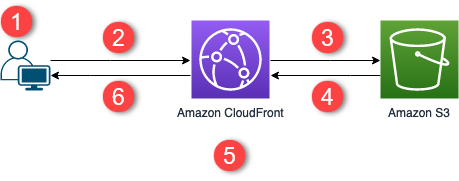

The following diagram shows an overview of how my website is serviced from AWS

- The viewer requests the website at formarc.net
- If the requested object is cached, CloudFront returns the object from its cache to the viewer.
- If the object is not in the CloudFront cache, CloudFront requests the object from the origin (an S3 bucket).
- S3 returns the object to CloudFront.
- CloudFront caches the object.
- The objects is returned to the viewer. Subsequent requests for the object that come to the same CloudFront edge location are served from the CloudFront cache.
But I have I have as well a serverless backend for the feedback form